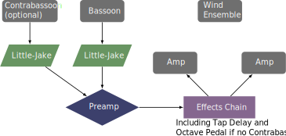

This piece was composed in 2018 for Mark Ortwein. It is one of the few solo pieces with an ensemble, and the only one in the repertoire with a wind symphony. The orchestration is for a full wind ensemble, including piccolo, E flat clarinet, soprano saxophone, electric bass, and drum set. It also is one of the rare pieces that uses a solo contrabassoon and live electronics. The materials can be obtained by contacting the composer at his website.
This piece is written with the electric bocal in mind, and contains instructions to not use microphones. Similarly, a bass amp is to be used and not the house PA system. There are few effects specified in the score; rather, the performer is free to choose their own effects during the improvisational sections. The sections have text detailing the overall feel of each section, indicating distortion or similar effects. The score states that the notated bassoon part should be amplified without any effects. However, in a recording featuring Mark Ortwein, the solo bassoon has some tone altering effects, likely a chorus, to give a more distinct sound. The only effects specified are a delay pedal with a feature to set the delay based on a live tempo set by tapping. It is quite possible that the performer would not have access to a contrabassoon with an electric bocal, in which case an octave pedal is to be used for the contrabassoon section.
The setup for this piece is shown below. 
The technical aspects of this piece are fairly advanced, featuring quick upper register playing. The improvisation sections often call for quick playing as well, but of course the bassoonist can determine how difficult those sections will be when they improvise. It likely could be done by an advanced undergraduate student, but is probably better for a graduate student. The electronics are not very difficult, as most of the effects are called for during an improvisation section where the bassoonist can add effects when they feel comfortable with them. Setting the tempo for the delay is probably the most difficult part of the electronics.
This piece has jazz influence mixed with more modern wind ensemble writing. There are some strong dissonances which would not be perceived as atonal. Much of the overall feel will come from the effects the bassoonist chooses to use in the improvisational sections and their improvisation skills. It should be an accessible piece for most audiences.
©2025 by Benjamin Bradshaw
Logo ©2025 by Hannah Bradshaw